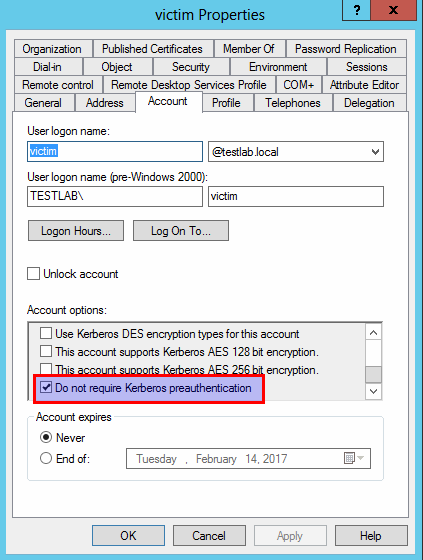

# Kerberoasting the AS-REP
If you're kerberoasting an AS-REP, you're attacking a user's NTLM hash.
With the hash, you now have multiple options:
• pass the hash (RDP. SMB, browse shares, etc.)
• crack it
Links•
https://www.harmj0y.net/blog/activedirectory/roasting-as-reps/## About AS-REP
Kerberos authentication can be divided into 3 parts:
• Part 1 - Getting a TGT (to request a TGS)
• Part 2 - Getting a TGS (to access a service)
• Part 3 - Use TGS to Access Service
The
AS-REP section of the Kerberos authentication process can be found in
Part 1 - Getting a TGT.
For more information refer to
Kerberos > Authentication ProcessTDLR:A user requests a TGT.
The
AS-REP reply provides the user with their requested TGT.
To protect the TGT, a session key is is also given which says the TGT is valid for 20 minutes.
This session key is encrypted with the user's NTLM hash. <-- This is where you extract the user's password hash and crack it.
## How to Kerberoast AS-REPs
Outlined here are methods to kerberoast AS-REPs.
For commands, refer to the sub-nodes.
### Option #1 - Pre-Auth already disabled
If a user on the Domain Controller has
“Do not require Kerberos preauthentication” enabled, you will be able to send a
AS_REQ as that user and receive a TGT_REP / AS_REP containing their NTLM password hash.
Users that might have Kerberos Pre-Auth disabled (it's not common)
• VPN users
• Linux machines connected to the Windows Active Directory
### Option #2 - Disable Pre-Auth on a user, then Kerberoast them
If there aren't any users with Pre-Auth disabled, you might be able to find users that have permissions to disable Pre-Auth
### Cracking
hashcat -m 18200 -a 0 <AS_REP_responses_file> <passwords_file>john --wordlist=<passwords_file> <AS_REP_responses_file>